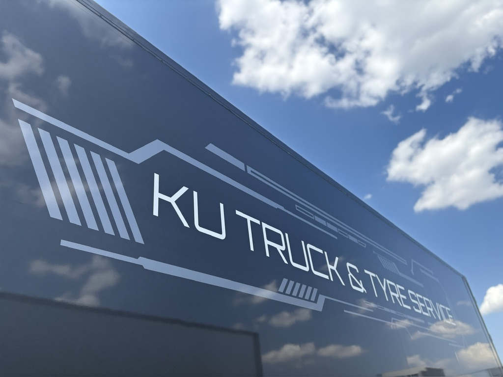

KUTRUCK ＆ TYRE SERVICE
SINCE 1981 — 埼玉・三郷
運送・倉庫から、タイヤ・整備・洗浄まで。
三郷の自社拠点で、トラックのことを丸ごと引き受ける。
運送・倉庫から、タイヤ販売・整備・洗浄まで。トラックに関わることは、ぜんぶ本気でやってる。
小型から10t大型まで、全24台。エアサスもパワーゲートも揃えて、デカい荷物も繊細な機材も運ぶ。
1981年、埼玉・三郷で創業。テレビ関係や舞台音響等の設備什器の運搬・保管を中心に、一般貨物まで手掛ける物流会社です。
近年は事業用自動車のタイヤメンテナンス・運搬事業へ進出し、世界的タイヤブランド PIRELLI の認定販売店に加入しました。

運ぶ・直す・売る。トラックの仕事を幅広く覚えられる。手に職つけたいヤツ、募集中。未経験、大歓迎。
運送・倉庫の依頼も、タイヤ・整備・洗浄の相談も、買取・用品の見積りも、採用も。
トラックのことなら、まず一本鳴らしてくれ。